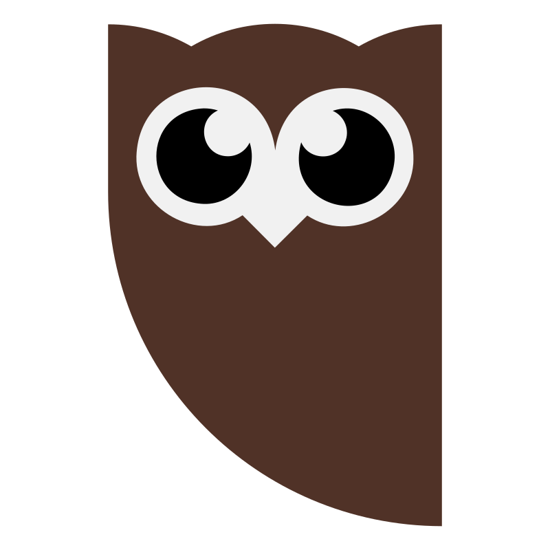
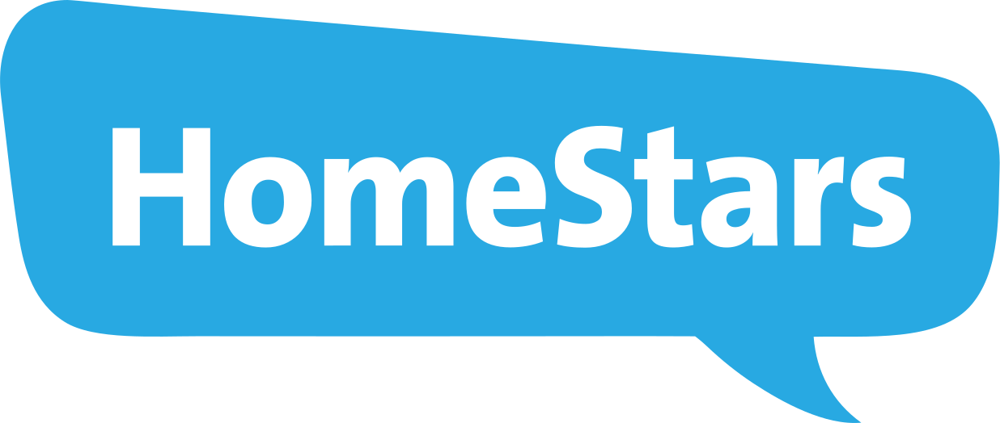

I am a software engineer with over 7+ years of Android development experience, specializing in performance engineering, system health, and large-scale debugging for high-traffic apps.
Experience
Mar 2022 - Current
- Designed and deployed an ML model to predict app-start, contributing to a 10% decrease in cold app-starts.
- Improved navigation latency of main-feed, reels, and profile using network streaming and layout pre-inflation.
- Reduced main-thread red events (busy for 1000ms or longer) by 5% and yellow events by 15%, directly improving scroll performance and reducing jank.
- Resolved high-priority (SEV1/SEV2) scroll-performance regressions, ensuring smooth user experiences across global surfaces.
 Hootsuite
Mar 2021 – Mar 2022
- Actively worked and maintained the project, serving over 500,000 MAU.
- Led critical modernization efforts, including the migration from Dagger to Hilt and CI/CD pipeline updates.
- Implemented TalkBack and Screen-Reader support to ensure compliance and enhance usability.
 HomeStars
Dec 2019 – Mar 2021
- Delivered core Android features in Kotlin and Java for a user base of 50,000+ MAU.
- Significantly improved app stability by implementing Jetpack components, Room database, and monitoring via Crashlytics and Datadog.